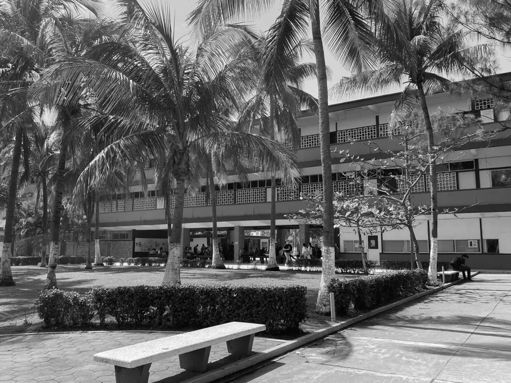
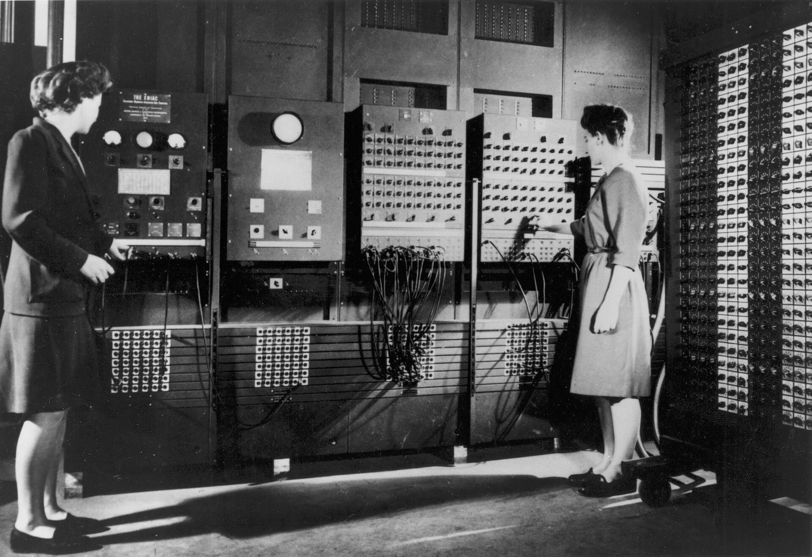
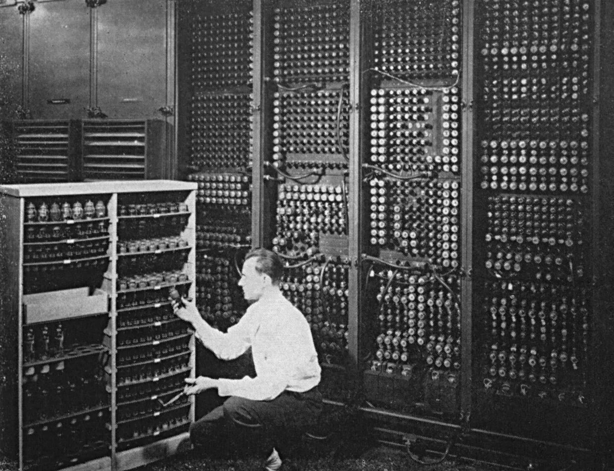
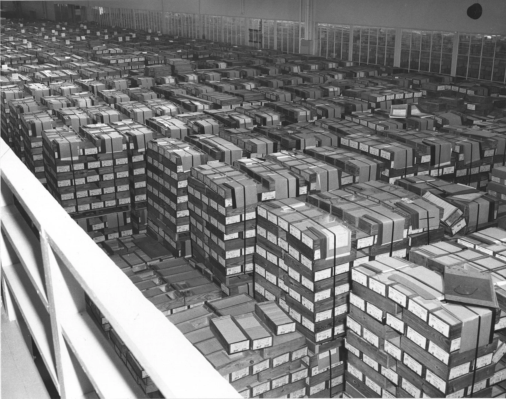
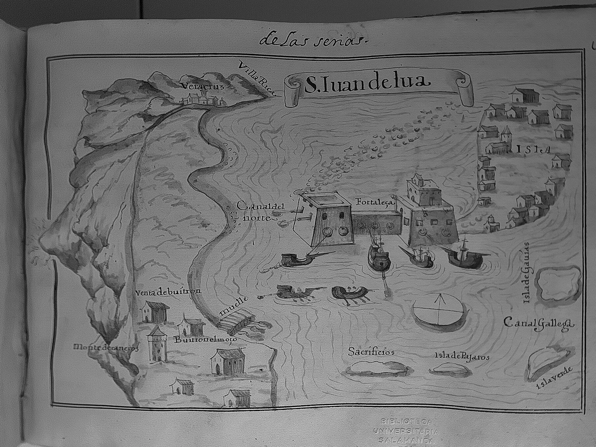

Talleres y conferencias
Talleres prácticos de dos a cuatro horas con la computadora abierta, y charlas de profesionales, investigadores y egresados con tiempo para preguntas. Algunas sesiones se comparten en línea con otros capítulos IEEE.
 Únete al capítulo
Únete al capítulo
Tecnológico Nacional de México · Veracruz, Ver., México · Noviembre de 2026
Resumen—Somos el capítulo estudiantil de IEEE Computer Society en el Instituto Tecnológico de Veracruz. Organizamos talleres, conferencias, hackatones, competencias y proyectos para estudiantes de computación, y conectamos al campus con la red internacional de IEEE, que en 2026 cumple 80 años.
Términos clave—desarrollo de software, inteligencia artificial, ciencia de datos, ciberseguridad, computación en la nube, ingeniería de software, tecnologías emergentes.
Cómo citarnos: Capítulo Estudiantil IEEE CS ITVER, “IEEE Computer Society en el ITVER”, Veracruz, 2026.


IEEE Computer Society tiene su origen en 1946, cuando el American Institute of Electrical Engineers formó su Subcomité de Dispositivos de Cómputo a Gran Escala [1]. Ese mismo año se presentó la ENIAC, una de las primeras computadoras electrónicas de propósito general. En 2026 la sociedad celebra su 80 aniversario [2] y reúne a profesionales, docentes y estudiantes de todas las áreas de la computación.
El capítulo estudiantil del Instituto Tecnológico de Veracruz acerca esa red al campus. Su comunidad natural son los estudiantes de Ingeniería en Sistemas Computacionales, 703 inscritos en 2022 según DataMéxico [3], y de carreras afines que quieren aprender haciendo: talleres prácticos, proyectos en equipo y competencias.
Misión (borrador). Acercar a la comunidad estudiantil del ITVER al conocimiento, las herramientas y la red profesional de IEEE Computer Society, con actividades prácticas que conecten el aula con la industria y la investigación.
Visión (borrador). Ser un capítulo de referencia en computación en el Golfo de México, reconocido por los proyectos y el talento que forma.

Tabla. Áreas tecnológicas del capítulo y lo que hacemos en cada una.
| Área | Qué estudia | En el capítulo | Herramientas de ejemplo |
|---|---|---|---|
| Desarrollo de software | Aplicaciones web, móviles y de escritorio | Talleres de Git, web y APIs | Git, JavaScript, Python |
| Inteligencia artificial | Modelos que aprenden de datos | Retos de clasificación con datos abiertos | Python, scikit-learn |
| Ciencia de datos | Análisis y visualización de datos | Análisis con datos públicos de Veracruz | pandas, SQL |
| Ciberseguridad | Ataque y defensa de sistemas | Retos de captura de bandera | Linux, Wireshark |
| Computación en la nube | Infraestructura bajo demanda | Despliegue con contenedores | Docker, servicios en la nube |
| Ingeniería de software | Requisitos, diseño, pruebas y calidad | Pruebas automatizadas y revisión de código | Git, marcos de pruebas |
| Tecnologías emergentes | Cómputo cuántico, IoT y realidad extendida | Charlas y prototipos con microcontroladores | Arduino, Raspberry Pi |
Talleres prácticos de dos a cuatro horas con la computadora abierta, y charlas de profesionales, investigadores y egresados con tiempo para preguntas. Algunas sesiones se comparten en línea con otros capítulos IEEE.

Equipos pequeños, un problema real y un plazo corto. Entrenamos para concursos como IEEEXtreme, la competencia de programación de 24 horas que IEEE organiza para sus miembros estudiantes.

Proyectos de semestre con revisiones entre pares y una presentación final, y actividades con otros capítulos, ramas estudiantiles y empresas de la región.

Programa tentativo · ejemplos de formato
| Sesión | Formato | Sala | Fecha |
|---|---|---|---|
| Git y GitHub para proyectos en equipo | Taller | Laboratorio de cómputo | Por confirmar |
| Cómo se protege una red universitaria | Conferencia | Auditorio | Por confirmar |
| Reto de 24 horas del capítulo | Hackatón | Campus ITVER | Por confirmar |
| Entrenamiento para IEEEXtreme | Competencia | En línea | Por confirmar |
| Python para análisis de datos | Taller | Laboratorio de cómputo | Por confirmar |
| Presentación de proyectos del semestre | Proyectos | Explanada | Por confirmar |
Los títulos son ejemplos de formato. El programa real se publicará con fechas, sala y registro.
La convocatoria tiene cinco pasos. Participar en el capítulo empieza el día que nos escribes; afiliarte a IEEE suma la red internacional.
Envía la carta de abajo o acércate a una actividad abierta. Te respondemos con el calendario del semestre.
Regístrate en ieee.org y elige la membresía estudiantil.
Suma IEEE Computer Society a tu membresía.
Elige la rama estudiantil del Instituto Tecnológico de Veracruz para quedar afiliado al capítulo.
Elige un área, entra a un equipo y presenta tu trabajo al final del semestre.
Instituto Tecnológico de Veracruz
Veracruz, Ver., México